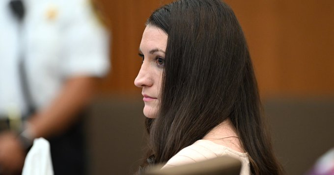

@CBSNews
📝 原文: How much time does AI save at work? New Census Bureau data breaks it down.
🇨🇳 译文: 人工智能在工作中节省了多少时间？新的人口普查局数据对此进行了细分。

🕒 2026-08-14T08:00:00+00:00
| 来源 | 旧窗口内数量 | 本次新增 | 本次淘汰 | 当前窗口内共有 |
|---|---|---|---|---|
| 推文 + Dawn 新闻 | 0 | 16 | 0 | 16 |
| ARY News | 0 | 0 | 0 | 0 |
注：淘汰数 = 旧窗口内数量 + 本次新增 - 当前窗口内共有




暂无文章。